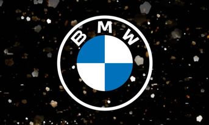
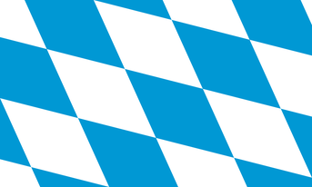

BMW AG (acronimul pentru Bayerische Motoren Werke AG (ajutor·info), în română Uzina Bavareză de Motoare SA) este o companie multinațională germană care produce în prezent automobile și motociclete de lux și a produs, de asemenea, motoare de avioane până în 1945.

Automobilele sunt comercializate sub mărcile BMW (cu sub-mărci BMW M pentru modele performante și BMW și pentru mașinile electrice cu priză electrică), Mini și Rolls-Royce. Motocicletele sunt comercializate sub marca BMW Motorrad.

Sigla circulară albă și albă BMW sau rotunda a evoluat din logo-ul circular al companiei Rapp Motorenwerke, din care a crescut compania BMW, combinată cu culorile albastre și albe ale drapelului Bavariei. Logo-ul BMW folosit încă astăzi a fost creat în 1917, deși cu diferite modificări minore ale stilului.